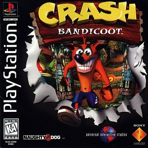

Retro-Spective
Crash Bandicoot
Crash Bandicoot is a third person platform game developed by Naughty Dog and released by Sony Computer Entertainment in 1996. The game focuses on Crash, a creature created by the antagonist of the game, Dr. Neo Cortex, and his henchman, Doctor Nitrus Brio (Dr. N. Brio). The game follows Crash as he cleans up the messes created by Cortex and his henchman, save his girlfriend Tawna, and defeats the evil doctors. The game was one of the best selling games for the PlayStation, following up with over 18 games featuring the lovable bandicoot.
